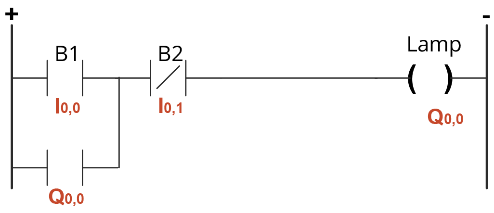

Ladder no TIA Portal V20
O que é o TIA Portal
-> Como funciona?
É o programa da Siemens usado pra montar a lógica ladder do CLP. Abaixo estão os principais elementos usados nas simulações.
Contatos NA / NF
Mostram as condições do circuito. O NA fica aberto e o NF fica fechado, no estado normal deles.
Bobinas Set [S] / Reset [R]
Servem pra ligar uma saída e deixá-la assim. O Set liga, o Reset desliga.
Bobina de Atribuição ( )
Define se a saída fica ligada ou desligada, de acordo com a lógica programada.
Temporizadores TON / TOF / TP
Servem pra controlar o tempo: atrasar pra ligar, atrasar pra desligar ou gerar um pulso.
Ramificações (Branch)
Criam caminhos paralelos na lógica, então dá pra ter condições diferentes levando à mesma ação.
Tabela de TAGs
É onde ficam organizadas as variáveis do projeto: entradas, saídas, memórias e outros elementos do CLP.
Contato Selo (Ladder)
-> Como funciona?
B1 é NA (I0.0) e B2 é NF (I0.1). Ao apertar B1 a saída Q0.0 liga e se mantém ligada pelo próprio contato de Q0.0 em paralelo, mesmo depois de soltar o botão. Apertando B2 (NF), o circuito é interrompido e Q0.0 desliga.
